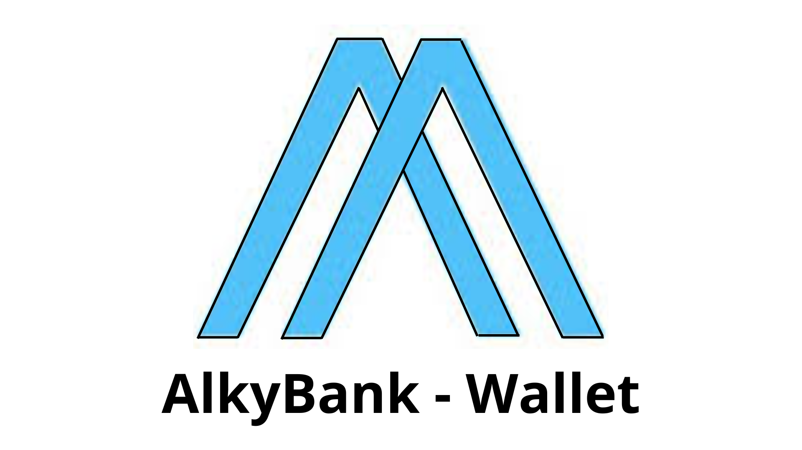
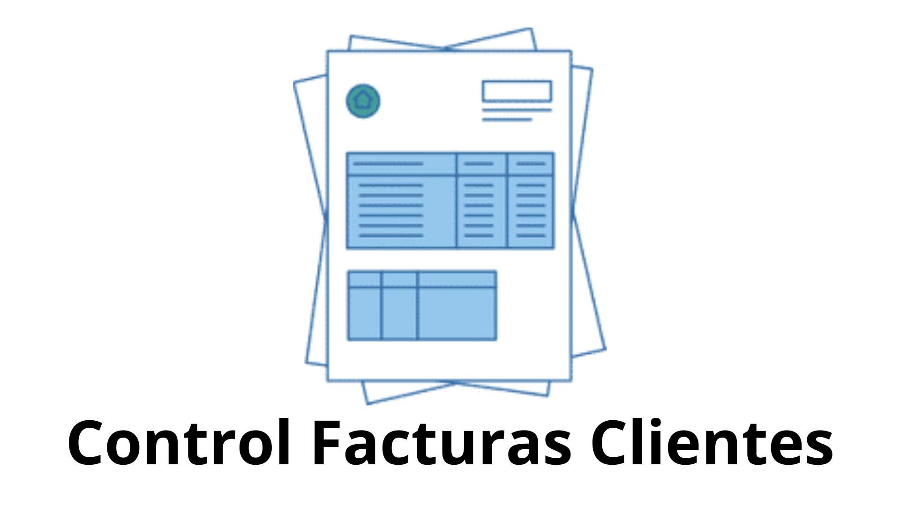

AlkyBank-Wallet
Desarrollo de un consumo API-REST que se solicitó en la realizacion del Skil-Up de desarrollo Backend con Java y Spring, que brindo la empresa Alkemy.
El mismo simula un software de una billetera virtual de un banco.
El mismo simula un software de una billetera virtual de un banco.

Control Facturas Clientes
Consumo API-REST que simula un software para el control de facturas de distintos clientes.
Posee un CRUD tanto para el control de facturas como para los clientes.
Posee un CRUD tanto para el control de facturas como para los clientes.